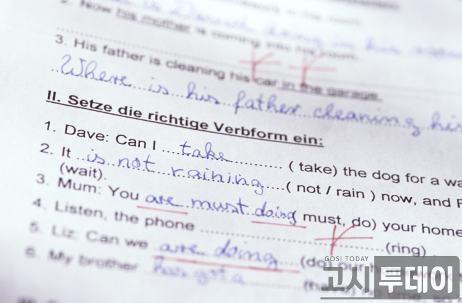
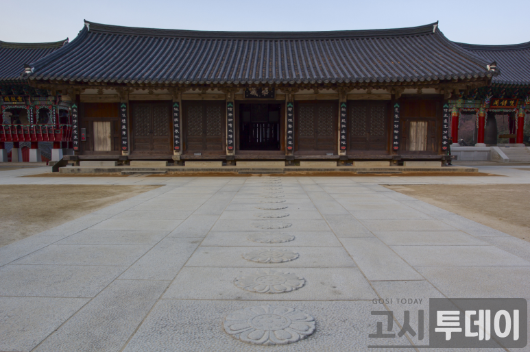

🌐 Yoonho Portfolio
Home
About me
Goal
나의 목표
목표 기간 : 2022.06.26 ~ 목표 달성 전
목표 : 전산직 공기업 입사 !
내용
전산직 공기업 입사를 위해 필요한 자격증과 토익점수를 달성하기 위해 방학동안 노력할 예정입니다.
공기업 입사 시 필요한 자격증
1. 토익,토스,오픽

2. 한국사능력검정시험

3. 컴퓨터활용능력
느낀점
현재 3학년 1학기가 끝난 시점 따 놓은 자격증은 한국사능력검정시험 고급 1개뿐이라아직 할 일들이 많이 남아있다는 것을 깨닫게 되었습니다.
이번 여름방학을 계기로 거의 모든 기업에서 필요로 하는 토익과 전공 공부를 해 목표를 달성할 수 있도록 노력할 예정입니다.